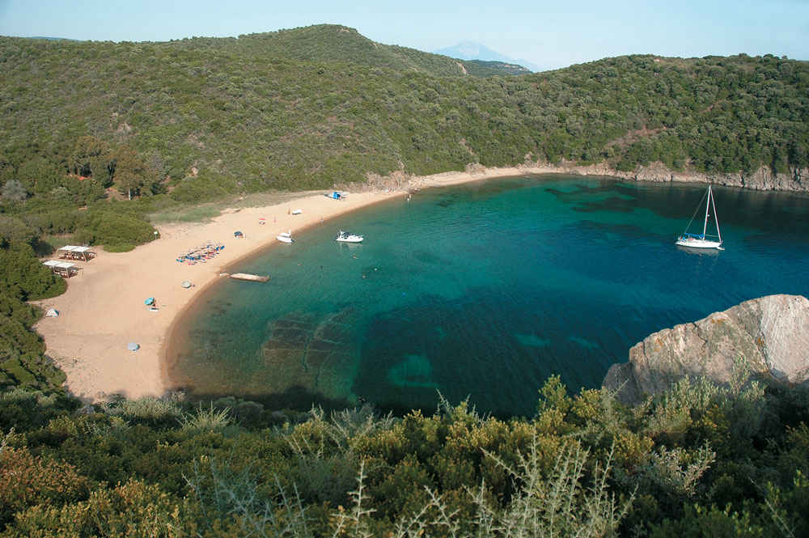

Ammouliani se intinde pe o suprafata de doar 6 km patrati, dar cu toate acestea se bucura de 23 de plaje in total. Unele mai mici, alte mai mari, iar altele atat de salbatice incat poti ajunge la ele doar cu barca sau coborand versantii stancosi ce marginesc insula.
Cele mai cunoscute si atractive plaje sunt: Alikes, pe aceasta atarnand si meritata clasificare internationala blue flag, Megali Ammos, Karagatsia. Plajele au nisip fin, apa cristalina, baruri, taverne, sezlonguri si umbrele. Apa este calda de la sfarsitul lunii mai pana tarziu, in septembrie.
Plaja Aliekes este locul in care poti sa inoti cu pestii, atat de limpede este apa. Nisipul fin, apa perfect limpede pana la adancimi considerabile, iti asigura o senzatie unica, paradisiaca. Esti doar tu, apa si pestii, ce iti poti dori mai mult atunci cand alegi un moment doar pentru tine in vacanta?
Pe plaja sunt aranjate sezlonguri, dar exista si zona amenajata pentru a-ti intinde linistit prosopul. Poti lua masa la tavernele de aici sau te poti rasfata cu bautura preferata servita direct pe plaja de fetele de la barurile.
Aceasta plaja prezinta un nisip fin, auriu, ocrotita de versanti stancosi cu apa la fel de limpede, dar care se bucura de o imagine mai salbatica, sau poate mai naturala. Plimbandu-va catre zona cu stanci veti putea observa, arici de mare, corali, pesti de diferite feluri si multe crustacee.
